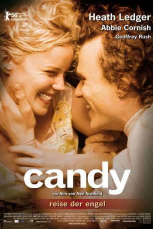

#1964 Candy - Reise der Engel
 
 IMDB-Wertung: 7.3 / 10
IMDB-Wertung: 7.3 / 10  Metascore: 57
Metascore: 57 
Schwerelos schweben Candy und Dan im Karussell, es dreht sich immer schneller, Farben und Formen verwischen. Die beiden sind verliebt bis über beide Ohren, die Malerin und der Gelegenheitspoet. Doch Dan ist ein Junkie, und Candy, die behütete Tochter aus dem konservativen Elternhaus, wiederum ist neugierig. Als sie beim ersten Schuss Heroin fast stirbt, beginnt der Abstieg vom Himmel zur Erde, Richtung Hölle. Candy und Dan wollen mehr, als ihnen die schnöde Realität bieten kann: ihre Liebe, den Rausch, das Paradies auf Erden. Als das Geld knapp wird und die wenigen Besitztümer verkauft sind, verkauft Candy ihren Körper, um die kurzen Rückflüge von der Erde in den Himmel zu finanzieren. Doch dann erwarten die beiden ein Kind und wollen heiraten.
Jahr: 2006
Dauer: 108 Minuten
FSK: 16
Land: Australien Studio: Concorde Home EntertainmentTonspuren: DTS - ,
Untertitel: Deutsch,
Auflösung: 1080p (1920x1040) Größe: 10649 MB
Genre: Drama, Liebe
Regisseur: Neil Armfield
Drehbuch: Luke Davies, Neil Armfield, Luke Davies
Soundtrack: Paul Charlier
Darsteller:
 Abbie Cornish als Candy
Abbie Cornish als Candy Heath Ledger als Dan
Heath Ledger als Dan Geoffrey Rush als Casper
Geoffrey Rush als Casper- Roberto Meza Mont als Jorge
- Tony Martin als Mr. Wyatt
- Holly Austin als Sunglasses Shop Assistant
- Tara Morice als Aunt Katherine
- Cristian Saliadarre als Little Angelo
- Adrienne Pickering als Teller
 Damon Herriman als Roger Moylan
Damon Herriman als Roger Moylan- Nathaniel Dean als Paul Hillman
- Anni Finsterer als Crystal , uncredited
- Alicia Hannah als Neighbour , uncredited
 Tom Budge als Schumann
Tom Budge als Schumann- Noni Hazlehurst als Mrs. Wyatt
- Craig Moraghan als Washing Machine Dealer
- John Lee als Hock Shop Man
- Noel Herriman als Celebrant
- Tim McKenzie als Uncle Rod
- Maddi Newling als Janey
- Patricia Lemon als Wedding Guest
- Barry Jaggers als Wedding Guest
- Leo Cowan als Mechanic
- Jason Chan als Dan's Doctor
- Luke Davies als Milkman
- Sean O'Riordan als Man in Toilets
- Lette Webb als Checkout Girl
- Sandy Winton als Candy's Doctor
- Rebecca Watt als Nurse
- John McNeill als Pharmacist
- Doreen Mullen als Woman in Pharmacy
- Felix Kerdijk als Rent Boy
- Felino Dolloso als Waiter
- Lee Lin Chin als Newsreader , archive footage, uncredited
- Brian Houston als TV Evangelist , archive footage, uncredited
- Michael Ienna als Addict , uncredited
Datei: X:\2006(A-F)\Candy - Reise der Engel (2006, FSK16, 1920x1040).mkv seit 10.09.2015
Festplatte: HD 2005(G-Z)-2006(A-Z)
 Es gibt insgesamt 56 Filme in der Gruppe '2006(A-F)'
Es gibt insgesamt 56 Filme in der Gruppe '2006(A-F)'